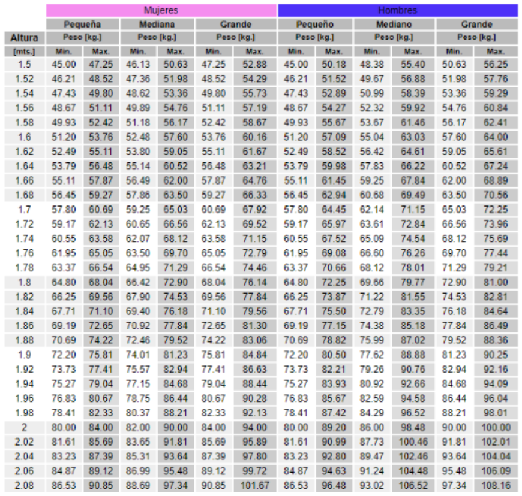

La siguiente tabla muestra el peso ideal en kilogramos corrrespondiente al as alturas indicadas en metros. El peso idealde una persona no siempre coincide con su peso deseable, por lo que los valores indicadosdeben considerarse simplemente como una referencia aproximada. Esto ocurre porque el peso ideal no contempla la edad actual de la persona, periodos que haya permanecido con sobrepeso, hijos que haya tenido (en el caso de las mujeres) y otros factores adicionales relacionados con su cálculo. A continuación, verá una tabla con los pesos y estaturas tanto para hombres como para mujeres.
